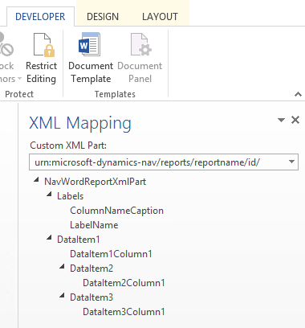

Add Fields to a Word Report Layout
A report dataset can consist of fields that display labels, data, and images. This topic describes the procedure for adding fields of a report dataset to an existing Word report layout for a report. You add fields by using the Word custom XML part for the report and adding content controls that map to the fields of the report dataset. Adding fields requires that you have some knowledge of the report's dataset so that you can identify the fields that you want to add to the layout.
Note
You cannot modify built-in report layouts.
To open the Custom XML part for the Report in Word
If not already open, then open the Word report layout document in Word.
For more information, see Create and Modify a Custom Report Layout.
Show the Developer tab in the ribbon of Microsoft Word.
By default, the Developer tab is not shown in the ribbon. For more information, see Show the Developer Tab on the Ribbon.
On the Developer tab, choose XML Mapping Pane.
In the XML Mapping pane, in the Custom XML Part dropdown list, choose the custom XML part for ADD INCLUDE report, which is typically last in the list. The name of the custom XML part has the following format:
urn:microsoft-dynamics-nav/reports/report_name/ID
report_name is the name that is assigned to the report.
ID is the identification number of the report.
After you select the custom XML part, the XML Mapping pane displays the labels and field controls that are available for the report.
To add a label or data field
Place your cursor in the document where you want to add the control.
In the XML Mapping pane, right-click the control that you want to add, choose Insert Content Control, and then choose Plain Text.
Note
You cannot add a field by manually typing the dataset field name in the content control. You must use the XML Mapping pane to map the fields.
To add repeating rows of data fields to create a list
In a table, add a table row that includes a column for each field that you want repeated.
This row will act as a placeholder for the repeating fields.
Select the entire row.
In the XML Mapping pane, right-click the control that corresponds to the report data item that contains the fields that you want repeated, choose Insert Content Control, and then choose Repeating.
Add the repeating fields to the row as follows:
Place your pointer in a column.
In the XML Mapping pane, right-click the control that you want to add, choose Insert Content Control, and then choose Plain Text.
For each field, repeat steps a and b.
Adding Image Fields
A report dataset can include a field that contains an image, such as a company logo or a picture of an item. To add an image from the report dataset, you insert a Picture content control.
Images align in the top-left corner of the content control and resize automatically in proportion to fit the boundary of the content control.
Important
You can only add images that have a format that is supported by Word, such as .bmp, .jpeg, and .png file types. If you add an image that has a format that is not supported by Word, you will get an error when you run the report from the ADD INCLUDE client.
To add an image
Place your pointer in the document where you want to add the control.
In the XML Mapping pane, right-click the control that you want to add, choose Insert Content Control, and then choose Picture.
To increase or decrease the image size, drag a sizing handle away from or towards the center of the content control.
Custom XML Part Overview
Word report layouts are built on custom XML parts. A custom XML part for a report consists of elements that correspond to the data items, columns, and labels that comprise the report's dataset. The custom XML part is used to map the data into a report when the report is run.
XML Structure of Custom XML Part
The following table provides a simplified overview of the XML of a custom XML part.
| XML Elements | Description |
|---|---|
<?xml version="1.0" encoding="utf-16"?> |
Header |
<WordReportXmlPart xmlns="urn:microsoft-dynamics-365/report/<reportname>/<id>/" |
XML namespace specification. <reportname> is the name that is assigned to the report. <id> is the ID that is assigned to the report. |
..<Labels>....<ColumnNameCaption>ColumnNameCaption</ColumnNameCaption>....<LabelName>LabelCaption</LabelName>..</Labels> |
Contains all the labels for the report. - Label elements that are related to columns have the format <ColumnNameCaption>ColumnNameCaption</ColumnNameCaption>.- Label elements have the format <LabelName>LabelName</LabelName.- Labels are listed in alphabetical order. |
..<DataItem1>....<DataItem1Column1>DataItem1Column1</DataItem1Column1> |
Top-level data item and columns. Columns are listed in alphabetical order. |
....<DataItem2>......<DataItem2Column1>DataItem2Column1</DataItem2Column1>....</DataItem2>....<DataItem3>......<DataItem3Column1>DataItem3Column1</DataItem3Column1>....</DataItem3> |
Data items and columns that are nested in the top-level data item. Columns are listed in alphabetical order under the respective data item. |
..</DataItem1></WordReportXmlPart> |
Closing element. |
Custom XML Part in Word
In Word, you open the custom XML part in the XML Mapping pane, and then use the pane to map elements to content controls in the Word document. The XML Mapping pane is accessible from the Developer tab (for more information, see Show the Developer Tab on the Ribbon).
The elements in the XML Mapping pane appear in a structure that is similar to the XML source. Label fields are grouped under a common Labels element and data item and columns are arranged in a hierarchal structure that corresponds to the XML source, with columns listed in alphabetical order. Elements are identified by their name as defined by the Name property in Report Dataset Designer in ADD INCLUDE.
The following figure illustrates the simple custom XML part from the previous section in the XML Mapping pane of a Word document.

To add a label or field to the layout, you insert a content control that maps to the element in the XML Mapping pane.
To create repeating rows of columns, insert a Repeating content control for the parent data item element, and then add content control for the columns.
For labels, the actual text that appears in the generated report is the value of the Caption property for the field in the data item table (if the label is related to the column in the report dataset) or a label in the Report Label Designer (if the label is not related to a column in the dataset).
The language of the label that is displayed when you run the report depends on the language setting of the report object.